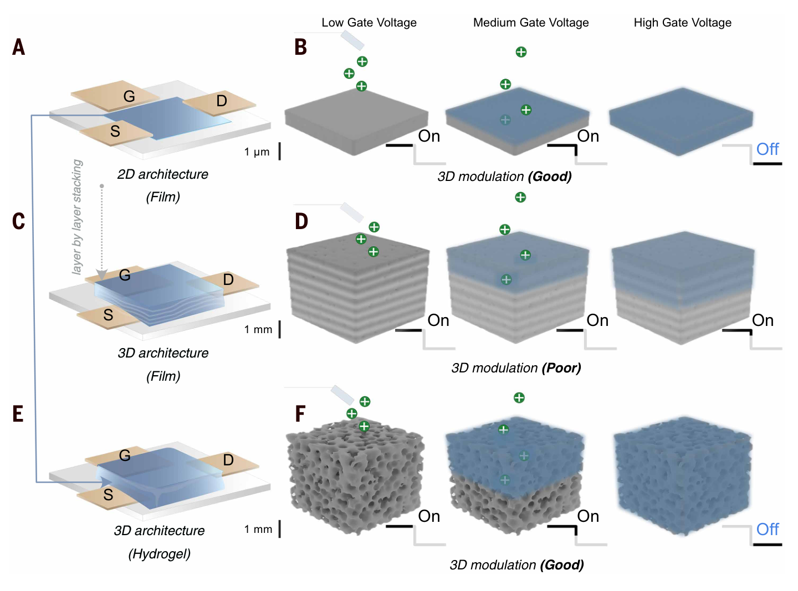
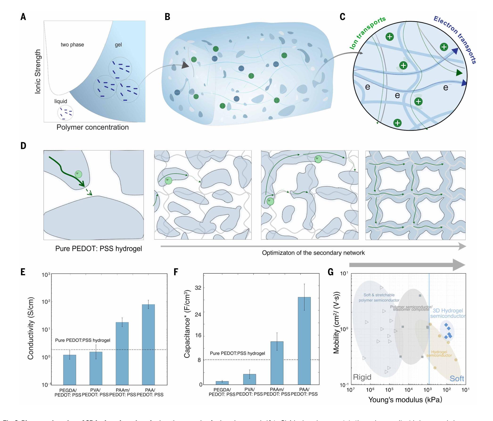
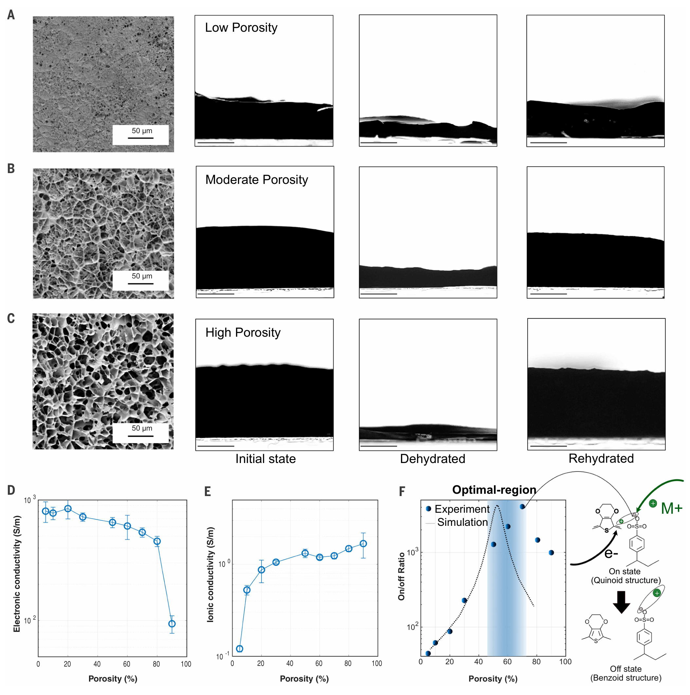
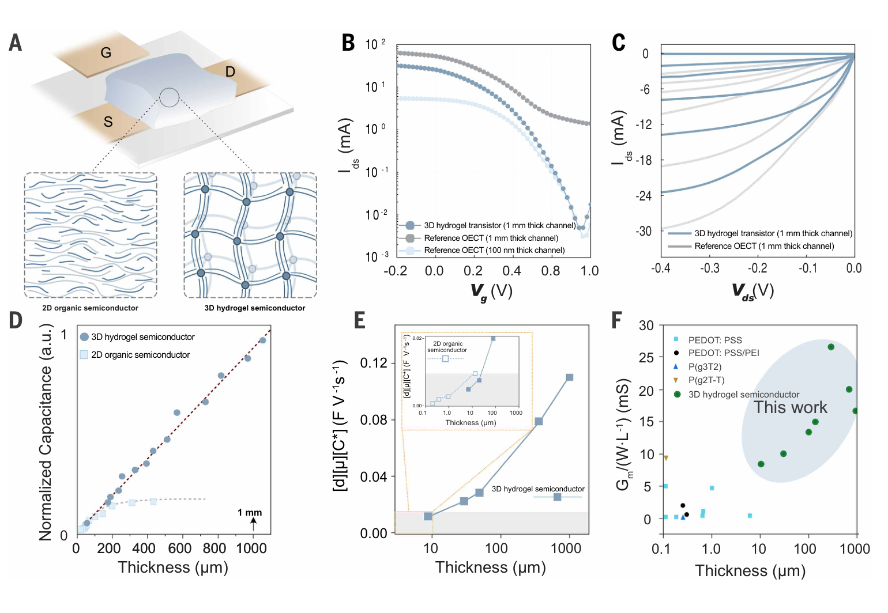
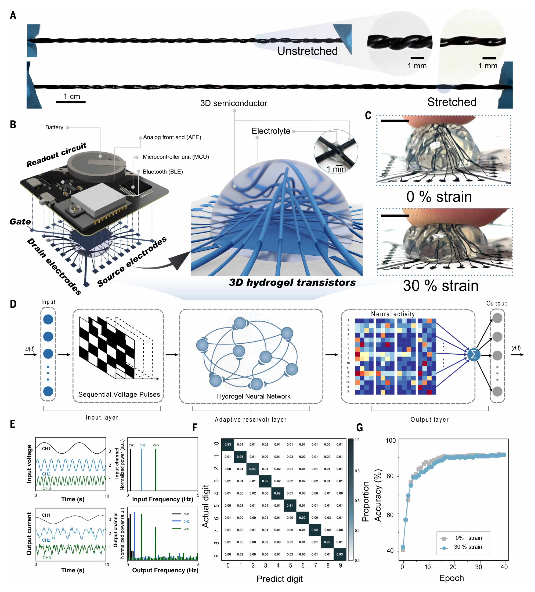
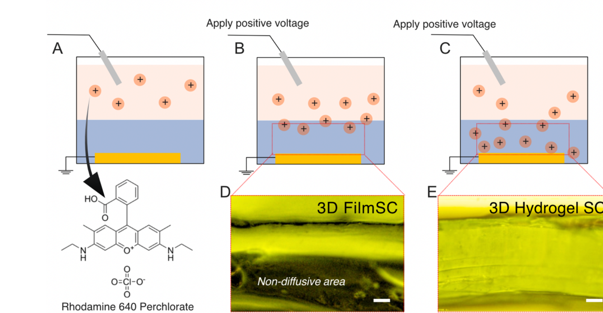
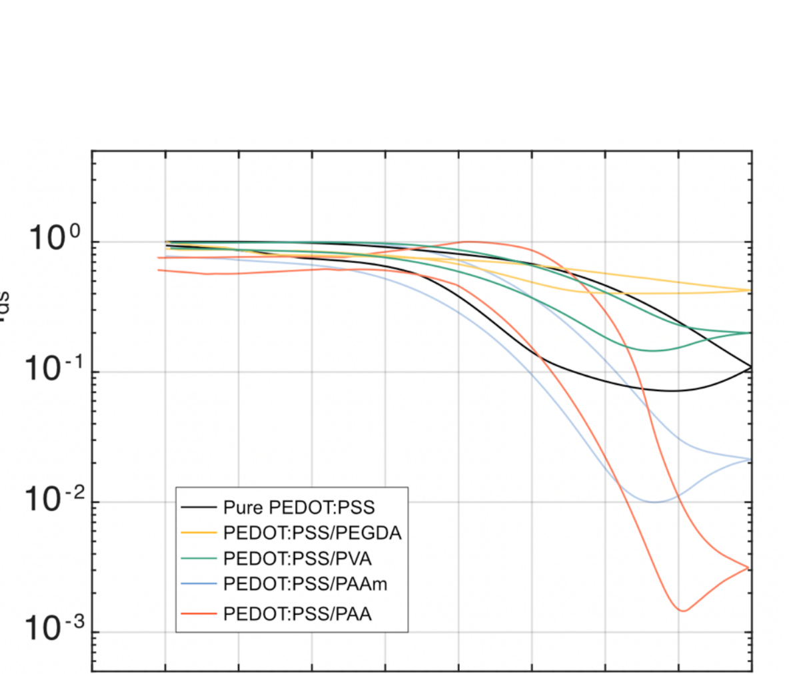
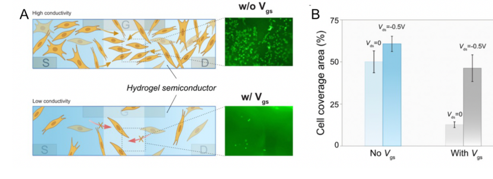

FIG. 1
先定义“真正的三维”：厚只是几何，整块能被门极调制才是功能
这张概念图把三个常被混淆的对象并排：薄膜 OECT 能完整开关但几何仍二维；厚膜堆叠看起来三维却只能调到表层；多孔水凝胶既有毫米尺度形体，也让离子进入整个体积。

普通有机电化学晶体管（OECT）靠离子进入沟道、改变 PEDOT:PSS 的氧化态；薄膜里这很容易，厚到毫米后却常只调到表面。作者用 PEDOT:PSS/PAA 双网络同时重建连续电子通路和多孔离子通路，把完整体相调制厚度从约 10 μm 推到 1000 μm，随后把水凝胶拉成互相穿插的纤维晶体管，用作三维储备池计算硬件。
证据边界：图像截自用户提供的正式论文与补充材料 PDF，仅发布用于研究解读的完整图体，不分发原始 PDF。本文证明的是毫米厚水凝胶沟道的体相电化学调制和一个 MNIST 储备池计算原型；“组织相容”“类脑三维连接”仍不能直接等同于体内长期稳定、任意三维集成或临床可用。
作者把“水凝胶晶体管为什么一做厚就关不掉”拆成两个耦合瓶颈：电子需要连续的 PEDOT+ 骨架，离子需要贯穿体积的孔道。PAA 次级网络先模板化 PEDOT:PSS、改善长程电子连通；溶剂交换和交联再把孔隙率调到中等区间，让电子和离子输运取得平衡。结果不是只获得一块导电软胶，而是获得厚度—电容继续线性、1 mm 厚时开关比约 104的真正体相可调半导体。
这张概念图把三个常被混淆的对象并排：薄膜 OECT 能完整开关但几何仍二维；厚膜堆叠看起来三维却只能调到表层；多孔水凝胶既有毫米尺度形体，也让离子进入整个体积。

水凝胶里有水、有绝缘次级网络，也有负责氧化还原的 PEDOT:PSS。若导电相被切成孤岛，离子即使能进去也无法形成高效电流。作者比较四种次级网络，发现 PAA 同时把电子电导率和体积电容推到最高。

这张图给出全文最关键的材料设计规律。提高孔隙率会给离子让路，却同时抽走电子骨架；因此开关比不是单调上升，而是在中等孔隙率形成峰值。

只报一个高开关比仍可能是表层效应。作者进一步检查体积电容：若整个厚度都参与掺杂，电容应与厚度成正比。水凝胶从几十微米到 1000 μm 保持线性，而普通 PEDOT:PSS 薄膜在约 10 μm 之后趋于饱和。

最后一图不是再做一个平面阵列，而是利用自支撑水凝胶纤维在空间互穿。共同门极输入时，各通道受自身电化学动力学和空间耦合影响，输出一组非线性响应；软件只需训练线性读出完成 MNIST 分类。

主文用电容线性证明“整个体积参与”；Fig. S2 换成空间可视化。带正电的罗丹明 640 高氯酸盐在 +0.6 V 下迁移，1 小时后厚 PEDOT:PSS 膜仍有暗区，水凝胶截面则几乎整层发黄。

五类水凝胶的往返转移曲线都有不同程度的滞回，PAA 方案开关最深，却仍显示明显回扫分离。作者明确把它归因于厚水凝胶中较长的离子旅行时间。

L929 成纤维细胞先在水凝胶中预培养 4 h，再在不同 Vds/Vgs 下继续培养 48 h。施加 Vgs 后细胞覆盖率下降，但 Vds=−0.5 V 可部分恢复；结果说明电状态会改变细胞结局，却没有隔离出“仅由电导变化驱动”的因果机制。

方法与材料边界：核心前驱体为 26 mg PEDOT:PSS、130 mg 丙烯酸和 5 mg MBAA，加入水/DMSO 后交联成胶；再经 EMIM-ES 离子液处理、离子液/水溶剂交换、80 °C 6 h + 130 °C 2 h 两步退火，并在 0.1 M PBS 中复水。流程可制成 10–1000 μm 薄片或毫米级纤维。正文数据与材料可从论文及补充材料获得；论文于 2025 年 3 月 14 日投稿、9 月 4 日接收，11 月 20 日正式发表。
← 返回论文细读书架